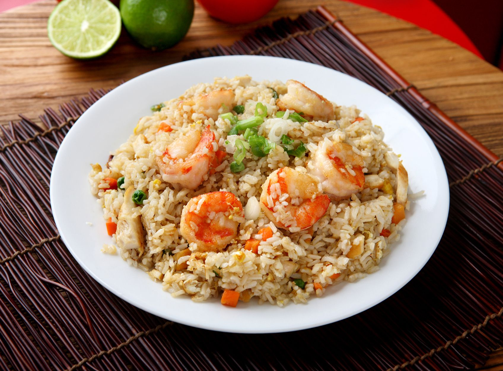

Shrimp-Fried-Rice Recipe

Shrimp-Fried-Rice discription
Shrimp fried rice is a classic stir-fried dish made with seasoned rice,
juicy shrimp, and vegetables, all tossed together with soy sauce and garlic.
This quick and flavorful meal is a popular choice for a hearty and
satisfying dish.
Ingredients
- 1 lb shrimp, peeled and deveined
- 3 cups cooked rice (preferably day-old)
- 2 eggs, lightly beaten
- 1 cup mixed vegetables (like peas, carrots, and corn)
- 3 tablespoons soy sauce
- 2 cloves garlic, minced
- 2 tablespoons cooking oil
- 1/4 cup green onions, sliced (optional)
- Salt and pepper, to taste
Steps
- Cook the Shrimp:
- Heat 1 tablespoon of oil in a large pan or wok over medium heat.
- Add the shrimp and cook until pink and opaque (about 2-3 minutes per side).
Remove from the pan and set aside.
- Scramble the Eggs:
- In the same pan, add a bit more oil if needed, then pour in the beaten eggs.
- Scramble the eggs until just cooked. Remove and set aside.
- Stir-Fry the Vegetables:
- Add the garlic and mixed vegetables to the pan, stir-frying for 2-3 minutes until tender.
- Add the Rice:
- Push the vegetables to the side and add the cooked rice.
- Stir-fry everything together for a couple of minutes until the rice is heated through.
- Combine and Season:
- Add the cooked shrimp and scrambled eggs back into the pan.
- Pour in the soy sauce, and stir everything to combine evenly. Season with salt and pepper to taste.
- Garnish and Serve:
- Top with green onions (optional) and serve hot.